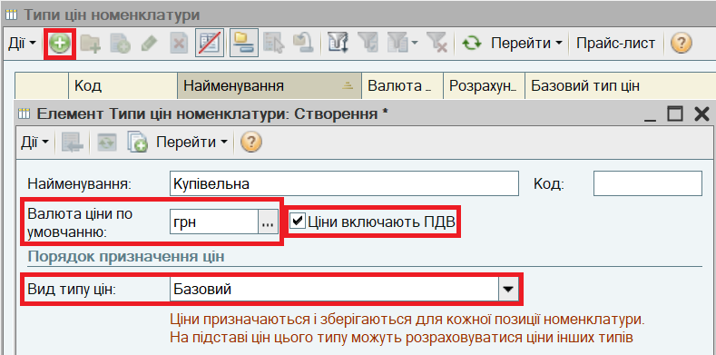
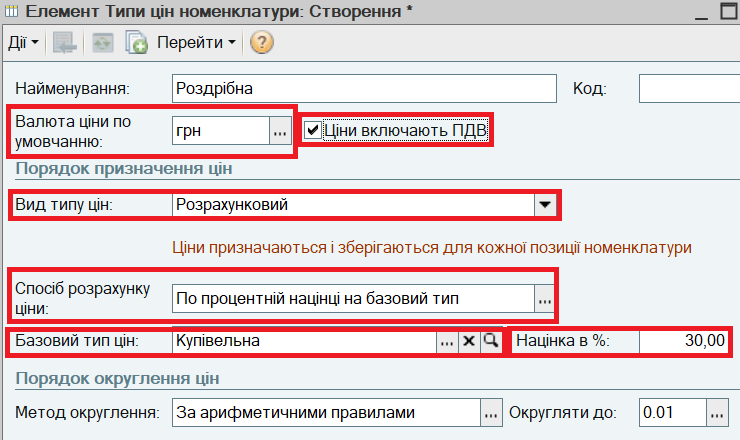
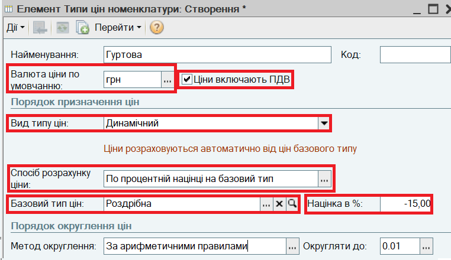
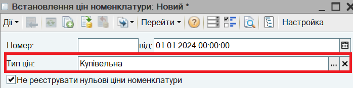
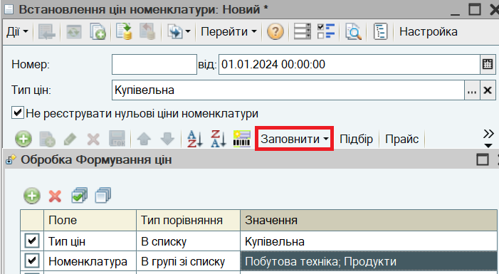
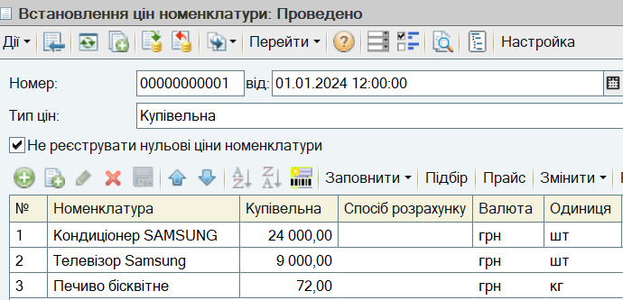
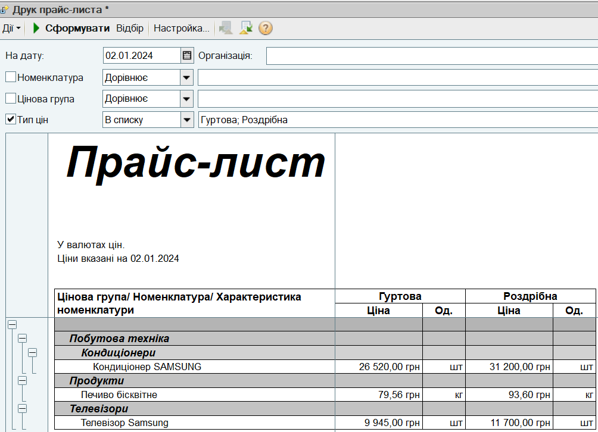

1. Відкрийте список "Типи цін". Для цього в меню Довідники виберіть пункт меню Номенклатура, підпункт Типи цін номенклатури.
2. Введіть в довідник правила визначення купівельної ціни:

2. Введіть правила визначення роздрібної ціни. Роздрібні ціни будуть розраховуватися від купівельних цін з націнкою 30%.

3. Введіть правила визначення гуртової ціни. Гуртові ціни будуть розраховуватися автоматично при зміні роздрібних цін зі знижкою 15%.

4. Введіть купівельні ціни на товари. Для цього в меню Документи виберіть пункт меню Ціноутворення , підменю Встановлення цін номенклатури. Створіть новий документ.
5. Виберіть тип ціни "Купівельна".

6. Для заповнення списку товарів, для яких потрібно зафіксувати ціни, натисніть на кнопку Заповнити - Заповнити за цінами номенклатури. В діалоговому вікн, що з'явилося, встановіть відбір за групами номенклатури і натисніть на кнопку Виконати.

7. Заповніть купівельні ціни і натисніть на кнопку ОК.

ПРИМІТКА.
Порядок колонок в документі Встановлення цін номенклатури може бути змінений за кнопкою Настройка.
УВАГА.
Документи Встановлення цін номенклатури мають бути оформлені датою, більш раннею, чим дата оформлення першого документа продажу товарів.
Для встановлення роздрібних цін скопіюйте введений раніше документ Встановлення цін номенклатури за кнопкою (або за клавішею F9 або за пунктом меню Дії - Скопіювати). Змініть в скопійованому документі Тип ціни на "роздрібні" і натисніть на кнопку Розрахувати за базовими цінами. Роздрібні ціни будуть розраховані автоматично відповідно до купівельної ціни та націнки.
ПРИМІТКА
Якщо націнки на різні товари відрізняються, їх можна ввести безпосередньо в документі Встановлення цін номенклатури і розрахувати ціни за кнопкою Розрахувати за базовими цінами.
8. Сформуйте прайс-лист торгового підприємства. Виберіть в меню Довідники пункт Номенклатура, підпункт Друк прайс-листа. Встановіть відбір за Типами цін і натисніть кнопку Сформувати:

ПРИМІТКА.
Товари в прайс-листі можна групувати за Ціновими групами, які не співпадають з групами довідника "Номенклатура". Віднести кожний товар до певної цінової групи можна з допомогою Групової обробки довідників і документів.